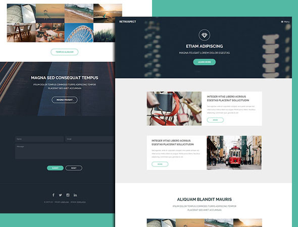
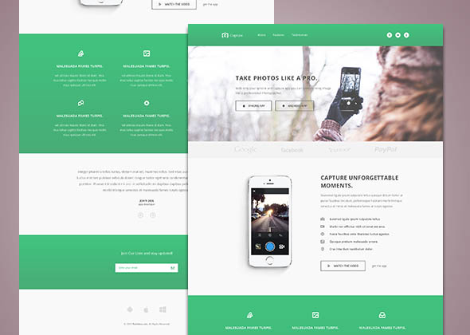
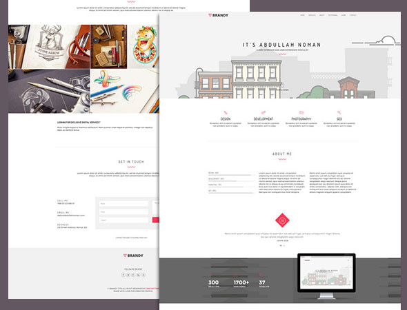
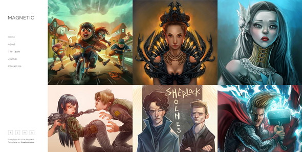
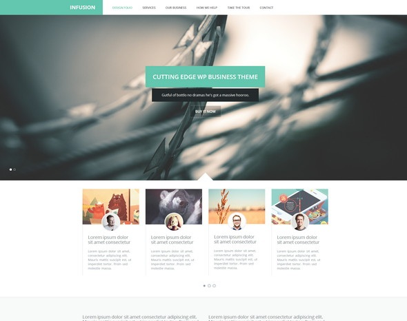

Web Responsie Display (WRD) là một plugin do VN Dile tạo, mục đích giúp các webmaster phát triển giao diện Web Responsive (Tự điều chỉnh kích thước) cho trang web mình một cách dễ dàng và thuận tiện.
Một số tính năng nổi bật của Web Responsive (WRD):
Hiện nay, các thiết bị trên thế giới đang ngày càng có nhiều chủng loại giao diện, kích thước từ nhỏ đến lớn. Để đáp ứng được nhu cầu thay đổi giao diện, kích cỡ trên từng loại thiết bị, chính chủ quản lý trang web phải luôn nắm vững yêu cầu: TRANG WEB CÓ THUẬN TIỆN VỚI CON MẮT KHÁCH HÀNG KHÔNG ? nếu họ không muốn bị khách hàng tránh xa và sang các trang web khác. Một trang web có giao diện không thuận lợi cho từng loại kích cỡ màn hình thì sẽ ra làm sao ?
Có rất nhiều cách khắc phục như tạo một trang web Responsive hay tạo thêm một trang dành cho điện thoại, máy tính bảng. Tuy nhiện, bạn nên biết, tạo thêm 1 trang là bạn phải viết lại code, chỉnh lại hình ảnh,... như thế sẽ mất rất nhiều thời gian. Vì vậy, tạo một trang web Responsive là một ưu tiên dành cho giới webmaster. Web Responsive sẽ cho khách hàng thấy trang mình nổi bật, đẹp và phát triển đúng theo công nghệ thế giới - HTML5 và CSS3.
Ngày 21/4/2015, Google - Công cụ tìm kiếm khổng lồ trên thế giới vừa cập nhật thuật toán mới có tên là “Mobilegeddon”, thuật toán này sẽ ảnh hưởng đến kết quả tìm kiếm của nhiều trang web trên các thiết bị di động. “Mobilegeddon” chỉ ảnh hưởng đến những kết quả tìm kiếm trên thiết bị di động, và người dùng có thể cảm nhận trên 40% truy vấn bị thay đổi khi tìm kiếm với thuận toán mới trên, song cũng đủ thấy trang web của mình sẽ bị ảnh hưởng như thế nào về lâu dài khi trang chưa hỗ trợ giao diện cho tất cả thiết bị.
Tạo một trang web Responsive "vừa dễ vừa khó", bạn có thể tự tạo hay chọn cho mình một framework như WRD, Bootstrap, W3.css,... hay các plugin tạo website nổi tiếng như Wordpress, Joomla,...
Tuy nhiên, bạn vẫn cần chỉnh sửa để trang bạn hoàn thiện và có tính sáng tạo hơn.
Retrospect
Capture
Brandy
Magnetic
Infusion

Wow, cảm ơn bạn. Bạn chỉ cần thêm 2 source: CSS và JS để WRD hoạt động.
WRD sử dụng keyCDN để lưu trữ file có cả https (SSL) nên bạn co thể yên tâm về tốc độ và bảo mật.
Chú ý: WRD JS cần Jquery có phiên bản trên 1.10.0. Nếu không có Jquery hay nó có phiên bản dưới 1.10.0, WRD sẽ tự thêm cho bạn Jquery phiên bản mới nhất.
<script type="text/javascript" src="http://vndile.com/wd/?q=js"></script>
<link type="text/css" rel="stylesheet" href="http://vndile.com/wd/?q=css">